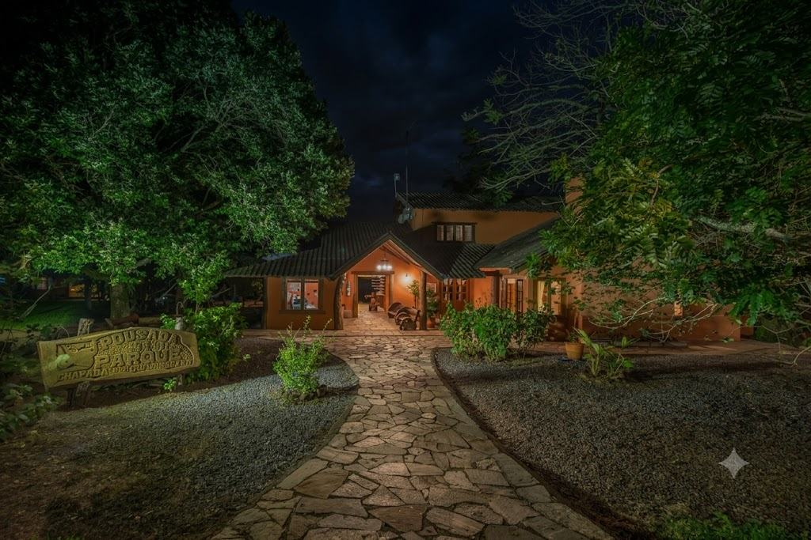
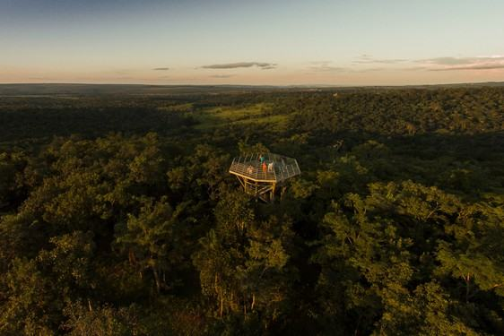
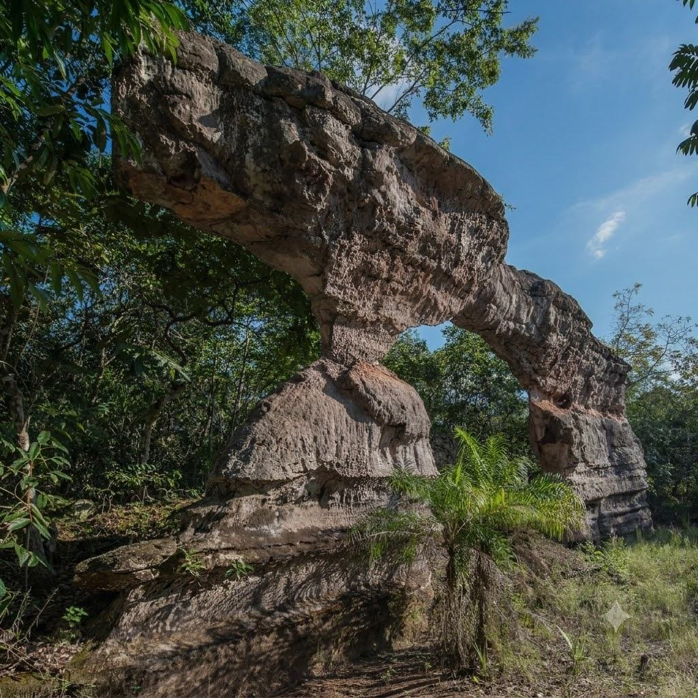
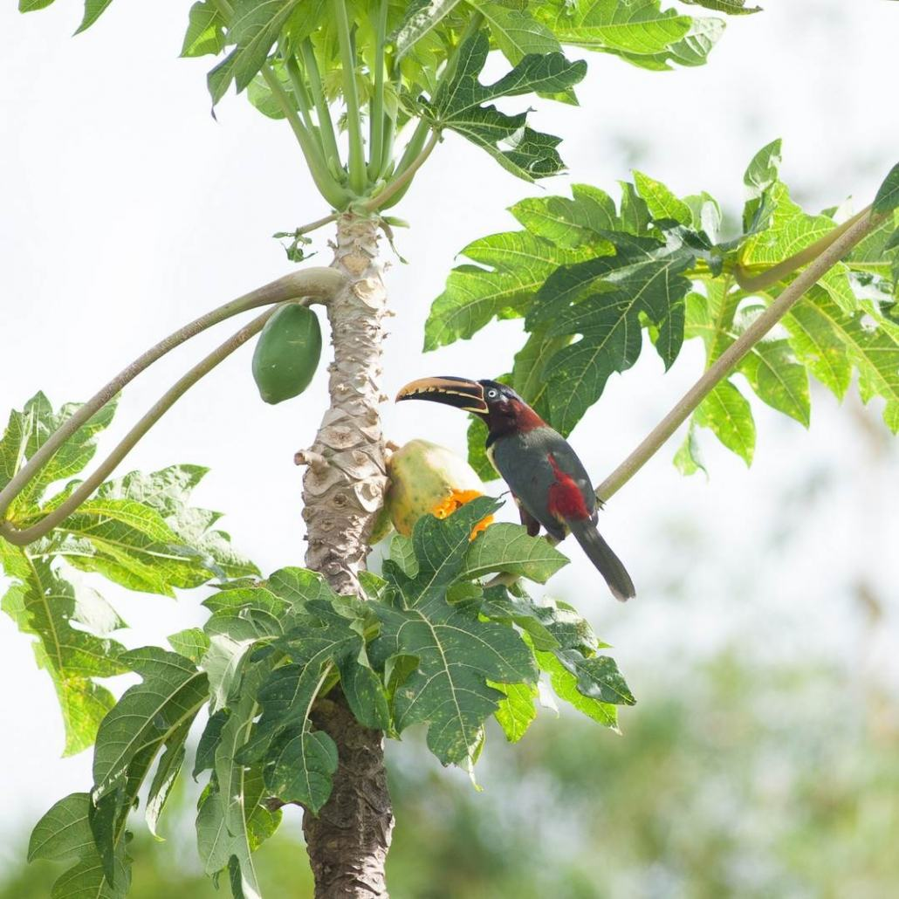
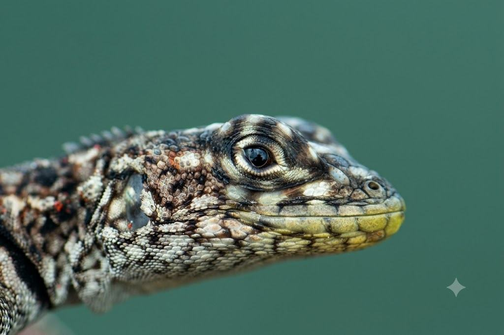
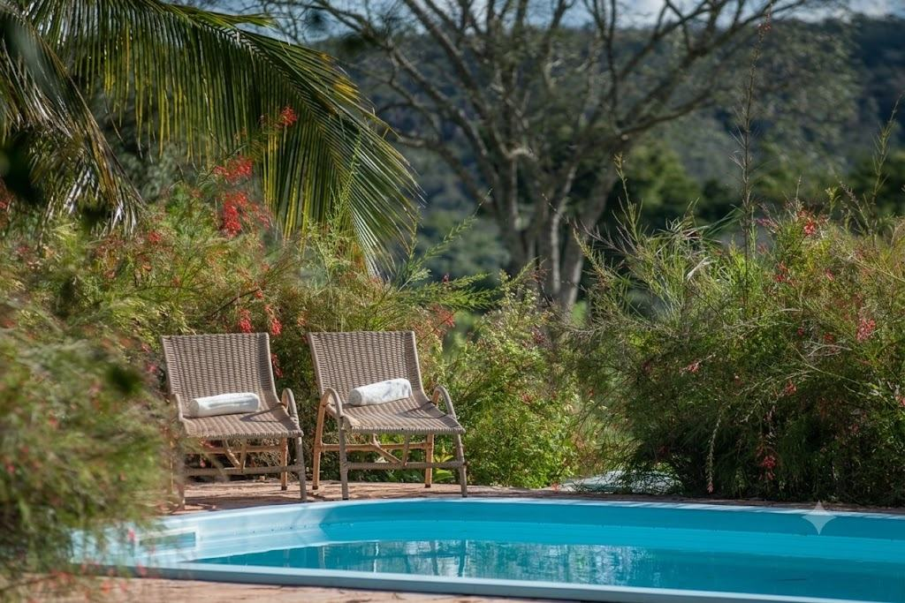
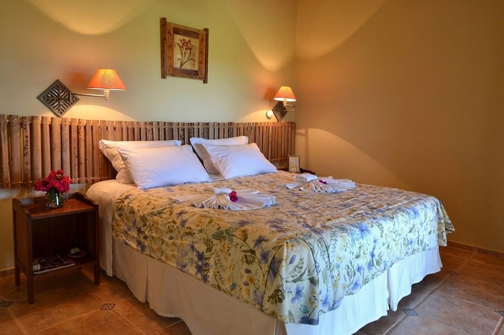
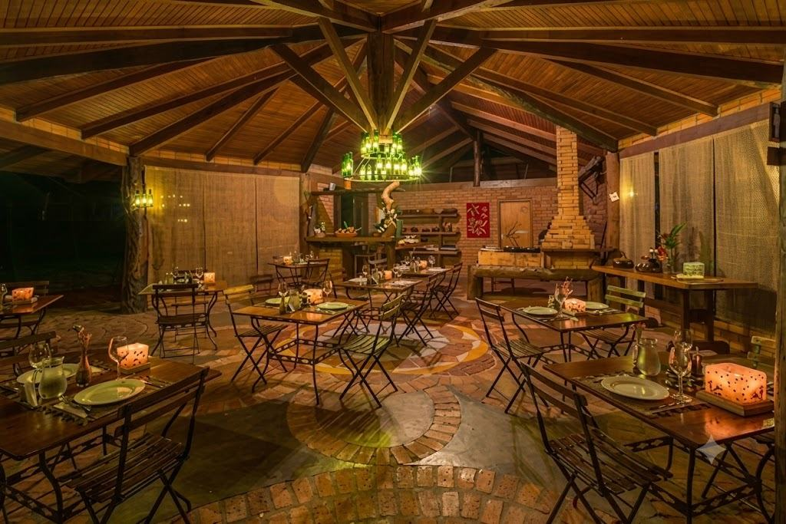

11 acomodações cercadas por mata nativa, trilhas, sítio arqueológico e mais de 390 espécies de aves catalogadas — a experiência que só quem hospeda dentro do Parque pode oferecer.
Verificar disponibilidade no WhatsApp
A Pousada do Parque fica dentro do Parque Nacional da Chapada dos Guimarães, em meio a 500 hectares de área preservada. São apenas 11 acomodações — sem multidão, sem pressa — pensadas para quem busca silêncio, ar puro e vista aberta para o cerrado.
A diária inclui café da manhã e acesso à Torre de Observação, às Trilhas Ecológicas, à Cachoeira (de janeiro a junho), Piscina, Sauna, Redário e visitação autoguiada ao Sítio Arqueológico com Pinturas Rupestres.
Tudo a caminhada de distância da sua acomodação.

Vista panorâmica do cerrado e um dos melhores pontos da região para observação de aves.
Trilhas guiadas ou autoguiadas em meio à mata nativa do Parque Nacional.

Visitação autoguiada a pinturas rupestres dentro da própria área da pousada.

Mais de 390 espécies catalogadas no Parque Nacional — destino reconhecido internacionalmente por birdwatchers.

Répteis, aves e outros animais do cerrado, avistados nas trilhas e nas proximidades da pousada.

Espaços de descanso dentro da própria pousada, incluídos na hospedagem.
Apartamentos duplos, triplos e quádruplos, além de uma cabana — todos com café da manhã incluído.

Comandado pelo chef Ale Salgueiro, o restaurante da pousada é parte da experiência — cardápio pensado para complementar os dias de trilha e contemplação dentro do Parque.

4,5 de 5 no Tripadvisor
2ª colocada entre 47 pousadas em Chapada dos Guimarães (195 avaliações)
Membro da rede Roteiros de CharmeFale agora com a recepção pelo WhatsApp e confira disponibilidade para as suas datas.
Falar no WhatsApp